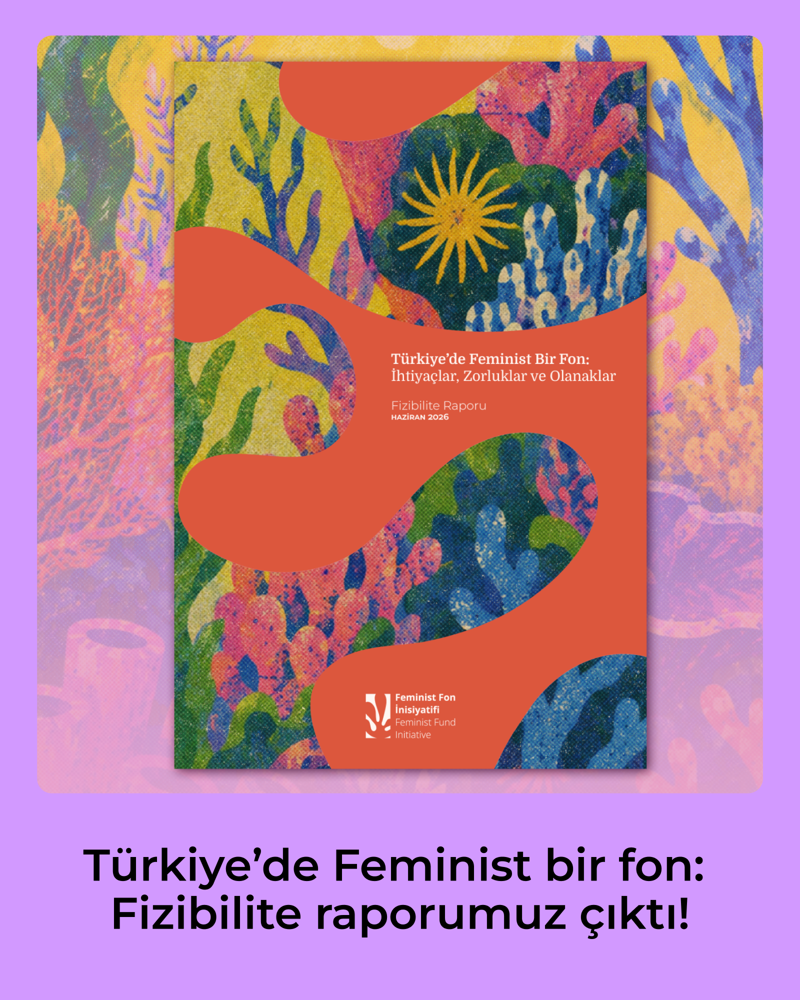

Türkiye'de Feminist bir fon: Fizibilite raporumuz çıktı!
Feminist Fon İnisiyatifi (FFI) olarak, Türkiye'deki feminist ve LGBTİ+ örgütlerin finansal ve örgütsel sürdürülebilirliğini, karşılaştıkları yapısal engelleri ve katılımcı bir feminist fonun olanaklarını incelediğimiz "Türkiye'de Feminist Bir Fon: İhtiyaçlar, Zorluklar ve Olanaklar" başlıklı fizibilite raporumuzu yayımladık. Kolektif bir emeğin ve dayanışmanın ürünü olan bu rapor; 11 farklı şehirde faaliyet yürüten 30 kadın, feminist ve LGBTİ+ örgütüyle yaptığımız görüşmelerde paylaşılan deneyimler ve katkılarla şekillendi.
Raporumuzun görsel dilinde, logomuzla da uyumlu bir şekilde, okyanus ekosisteminin can damarı olan mercan resiflerini merkezimize aldık. Tıpkı mercanların birbirine tutunarak, birbirini besleyerek ve dışarıdan gelen akıntılara karşı devasa resifler oluşturarak hayatta kalması gibi; sivil toplumdaki feminist örgütlenmelerin de dayanışma ağlarıyla nasıl bir koruma çemberi ve yaşam alanı kurduğunu vurgulamak istedik.
Raporun tamamını PDF olarak okumak ve indirmek için buraya tıklayınız. (yeni sekmede açılır)